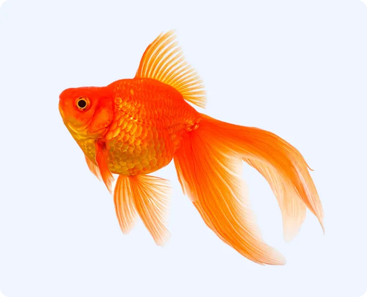

Рыба для пруда
Вуалехвост
Цена и наличие
- 5-8 см21 BYN / шт.В наличии
- 8-12 см56 BYN / шт.В наличии
Данные на 23.11.2026.
Характеристики
- Внешний вид
- Тело короткое и округлое, плавники длинные и вуалеобразные
- Сезонность
- Круглый год
- Возраст
- Сеголетки, годовики
- Максимальный вес
- До 300 грамм
- Продолжительность жизни
- Обычно 10–15 лет. При хорошем качестве воды, правильном кормлении и стабильных условиях золотые рыбки способны жить 20 лет и более
- Половая зрелость
- Обычно наступает в возрасте 2–3 лет, однако при хорошем кормлении и благоприятной температуре отдельные особи могут созревать раньше. Скорость полового созревания зависит от условий содержания, темпа роста и сезонного температурного режима
- Питается
- Вуалехвост — всеядная рыба. В рацион входят зоопланктон, мелкие ракообразные, личинки водных насекомых, черви и другие беспозвоночные, а также водоросли, мягкие части растений и органический детрит. При содержании в пруду основным дополнительным питанием должны быть полноценные корма для золотых рыбок
- Температура воды для активного питания и размножения
- Наиболее благоприятная температура для активного питания и роста составляет примерно 18–24 °C. Нерест обычно происходит весной после постепенного повышения температуры воды примерно до 18–22 °C
- Условия пруда для содержания
- Лучше всего подходит спокойный пресноводный пруд со слабым течением, хорошей фильтрацией и аэрацией. Водоем должен иметь свободное пространство для плавания, участки с водной растительностью и безопасные укрытия без острых краев. Из-за длинных плавников вуалехвост хуже приспособлен к сильному течению и активной конкуренции за корм, чем обычная золотая рыбка или комета
- Рост
- Сеголетки 10 г, двухлетки 50 г, трехлетки 100 г и более
Описание
Вуалехвост — это разновидность золотой рыбки, которая отличается своим элегантным внешним видом и длинными, плавными плавниками.
УСЛОВИЯ ОБИТАНИЯ
Вуалехвост — декоративная форма золотой рыбки (Carassius auratus), отличающаяся округлым телом и длинными ниспадающими плавниками. Благодаря яркой окраске и выразительному хвосту он хорошо подходит для декоративных садовых прудов, где рыбу можно наблюдать с поверхности. Лучше всего вуалехвост чувствует себя в спокойной воде без сильного течения. Длинные плавники снижают скорость и маневренность, поэтому мощные насосы и направленный поток воды могут постоянно утомлять рыбу. В пруду желательно предусмотреть зоны со слабым движением воды, где вуалехвост сможет спокойно отдыхать и кормиться. Качество воды имеет большое значение. Золотые рыбки активно питаются и выделяют значительное количество продуктов жизнедеятельности, поэтому в декоративном пруду необходимы достаточный объем воды, биологическая фильтрация и хороший кислородный режим. В жаркую погоду особенно полезна дополнительная аэрация, поскольку с повышением температуры количество растворенного кислорода в воде уменьшается. В пруду можно использовать живые растения и естественные укрытия, однако камни, декорации и оборудование не должны иметь острых краев. Длинные плавники вуалехвоста сравнительно легко повреждаются, а травмы могут стать причиной последующего бактериального или грибкового поражения. Вуалехвоста лучше содержать вместе с другими спокойными золотыми рыбками сходного размера и скорости плавания. Быстрые кометы, крупные кои и особенно хищные рыбы могут создавать конкуренцию за корм или травмировать медлительного вуалехвоста.
РАЗМНОЖЕНИЕ
Вуалехвост способен самостоятельно размножаться в пруду при наличии половозрелых рыб, подходящей температуры и нерестового субстрата. Размножение носит сезонный характер и обычно начинается весной после зимнего периода и постепенного прогрева воды примерно до 18–22 °C. Во время нереста самцы активно преследуют самок и стимулируют их к выметыванию икры. Оплодотворение наружное: самка выпускает икру, а самцы одновременно выделяют молоки. Специальных гнезд золотые рыбки не строят. Икра мелкая и клейкая. Она прикрепляется к подводной растительности, корням, нерестовым щеткам и другим подходящим поверхностям. Самка может выметывать икру несколькими порциями в течение нерестового периода. После нереста взрослые рыбы не охраняют икру и потомство. Более того, золотые рыбки способны поедать собственную икру и только что появившихся мальков, поэтому при необходимости сохранить потомство икру или взрослых производителей после нереста разделяют. При температуре около 20–22 °C личинки обычно появляются примерно через 3–5 суток. Первое время они используют запас желточного мешка, после чего переходят на самостоятельное питание мелким зоопланктоном и специализированными стартовыми кормами.
КОРМЛЕНИЕ
Вуалехвост — всеядная рыба с достаточно разнообразным рационом. В естественной среде пруда он поедает зоопланктон, личинок насекомых, мелких ракообразных, червей, водоросли, мягкий растительный материал и органический детрит. При содержании в декоративном пруду основу дополнительного рациона лучше составлять из качественного полноценного корма для золотых рыбок. Для вуалехвостов особенно удобны медленно тонущие гранулы: из-за округлой формы тела и относительно медленного плавания им проще спокойно собирать такой корм, чем конкурировать за быстро плавающие частицы на поверхности. Рацион можно дополнять растительными компонентами и подходящими натуральными кормами. Корм должен быть разнообразным, но перекармливать рыбу нельзя: остатки пищи быстро ухудшают качество воды, увеличивают нагрузку на фильтрацию и повышают расход кислорода. Количество корма необходимо корректировать по температуре воды. При 18–24 °C вуалехвост активно питается и растет. По мере охлаждения воды обмен веществ замедляется, поэтому порции и частоту кормления постепенно уменьшают.
ЗИМОВКА
Вуалехвост более чувствителен к зимнему содержанию, чем обычная золотая рыбка, комета или шубункин. Некоторые линии способны успешно зимовать в открытом пруду, особенно если рыба выращена на улице и постепенно адаптирована к сезонному снижению температуры, однако способность к такой зимовке зависит от происхождения и состояния конкретной рыбы. Для климата Беларуси нельзя считать зимовку любого приобретенного вуалехвоста в открытом пруду гарантированно безопасной. Рыбу, которая содержалась в теплых условиях и не проходила постепенную сезонную адаптацию, безопаснее на зиму переводить в прохладный незамерзающий водоем или емкость с хорошей фильтрацией и аэрацией. Если адаптированные вуалехвосты зимуют непосредственно в пруду, необходимо обеспечить достаточно глубокую незамерзающую зону и стабильный кислородный режим. Водоем не должен промерзать полностью, а под ледяным покровом нельзя допускать продолжительного дефицита кислорода. С понижением температуры обмен веществ и потребность в пище существенно уменьшаются. В холодной воде интенсивное кормление прекращают, поскольку рыба усваивает пищу значительно медленнее. Весной кормление постепенно возобновляют по мере устойчивого прогрева воды и восстановления активности рыб.